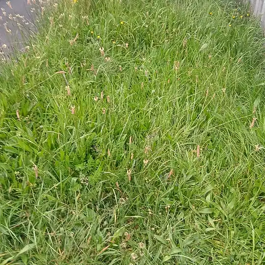
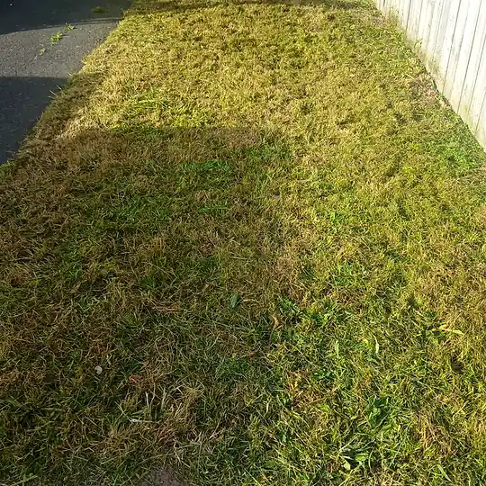
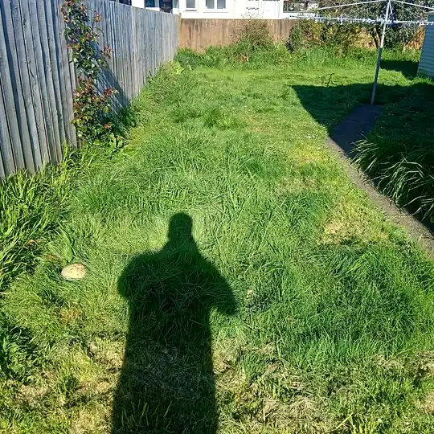
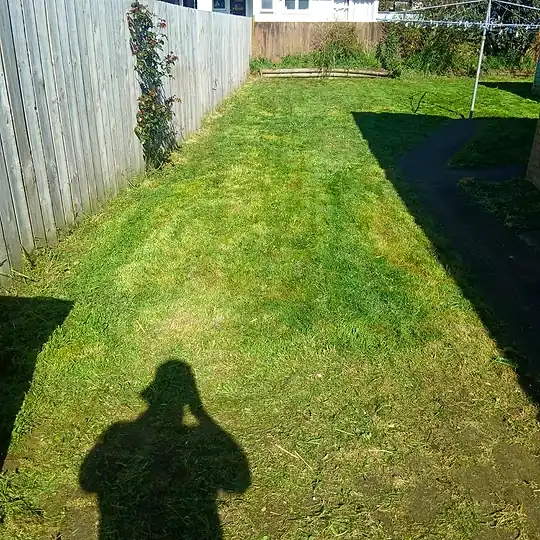

Need your lawn mowed once? Easy.
Not everyone needs a regular mowing run. Sometimes the lawn has got away on you, or you just need it looking sharp for one occasion. We do one-off mows across Hamilton with no contract and no ongoing commitment.
One-off mows start from $45. Most one-off jobs are between $45 and $150, depending on the size of the lawn and how long the grass is. You get a free quote first, so you know the final price before we start.
Need it done quickly?
If you are searching for same day or urgent lawn mowing, tell us your deadline when you ask for a quote. We usually respond within 24 hours on weekdays and book urgent jobs into the first gap we have. We will not promise a same day mow, but we will tell you straight away whether we can make your date.
We work Monday to Friday, 9am to 6pm. The earlier in the week you get in touch, the more options we usually have.
When a one-off mow makes sense
- Moving out or end of tenancy, so the lawn passes the final inspection.
- Selling your home, before photos or an open home.
- Back from holiday and the grass has taken off.
- Before a party or family event at your place.
- Spring growth, when Hamilton lawns can get away from you in a couple of weeks.
Overgrown lawns are fine
Long grass is part of the job, not a problem. We catch mow, so the clippings are collected instead of left in clumps across the lawn, and we trim the edges along fences, paths and gardens so it looks finished.
Very long grass can take more than one pass to cut cleanly. That extra time is why overgrown lawns sit towards the top of the price range, and it is all included in your quote.




If there is a lot of extra green waste, such as piles of branches or garden clippings, we can take that away too. Green waste removal is quoted per job. See section clean-ups for bigger tidy-ups.
One-Off Mowing FAQs
Do you do same day lawn mowing?
We do not promise same day mowing. We usually respond within 24 hours on weekdays and book urgent jobs into our first available gap. Tell us your deadline when you ask for a quote and we will let you know straight away if we can make it.
How much does a one-off lawn mow cost in Hamilton?
One-off mows start from $45. Most one-off jobs are $45 to $150, depending on the size of the lawn and its condition. You get a free quote with the final price before any work starts.
Do I have to sign up for regular mowing?
No. A one-off mow is just that. If you like the result and want regular visits later, we can set that up, but there is no obligation.
Can you mow a really overgrown lawn?
Yes. Long and overgrown grass is a normal job for us. It can take longer to cut cleanly, which is reflected in the quote.
Do you take the clippings away?
Yes. We catch mow, so clippings are collected. Extra green waste such as branches or garden waste is quoted per job.
Do you provide WINZ quotes?
Yes. We provide WINZ approved quotes for lawn mowing. Ask for a WINZ quote when you get in touch.
Get your one-off mow booked
Send us your address and when you need it done. We usually respond within 24 hours on weekdays, or call us on 07 809 6933.